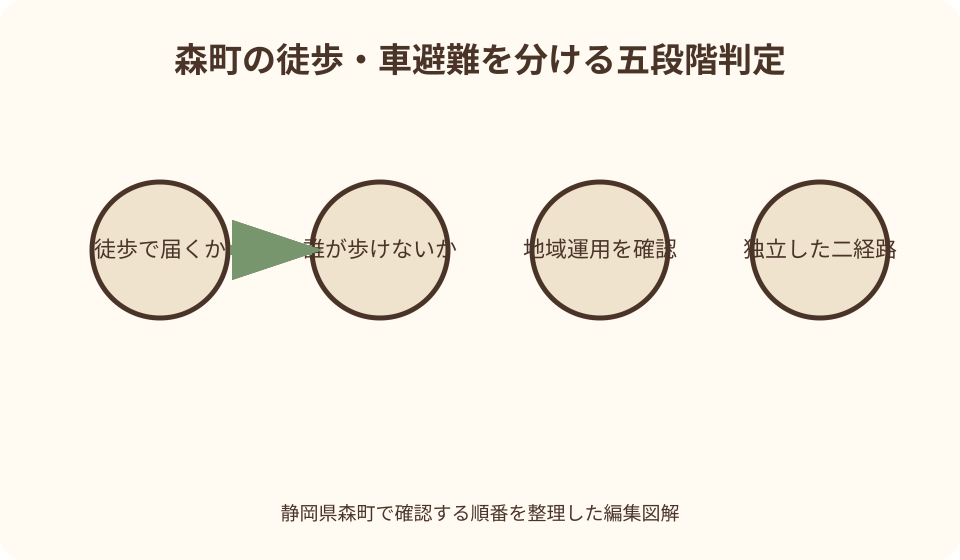
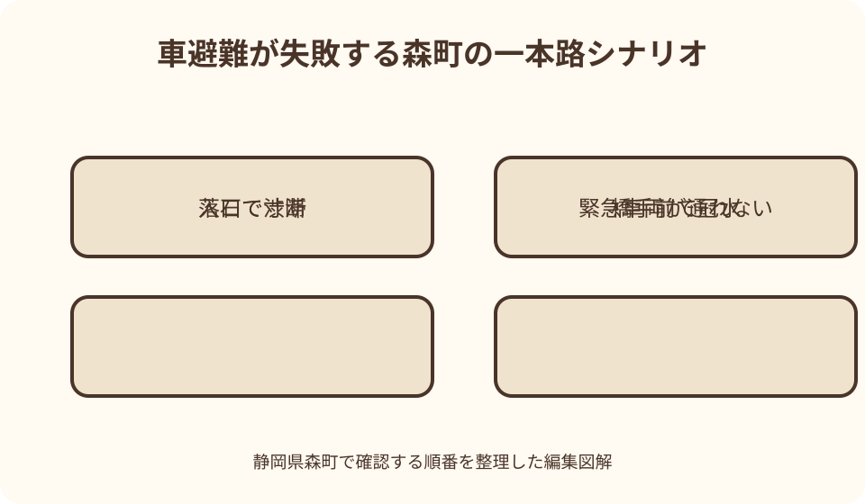

防災・家族の備え｜最終確認 2026-08-10
静岡県森町で車避難を考える前に｜徒歩原則・道路寸断・要配慮者
車は遠くへ移動でき、要配慮者を乗せられる一方、道路寸断、冠水、渋滞で止まれば避難者と緊急車両の両方を妨げます。森町では町なかと三倉・天方など山間部で条件が違うため、「車か徒歩か」を災害直前に決めず、誰のために、どの段階で、どの経路なら使うのかを町や地域の計画と照合します。

編集イラスト結論：車は避難の標準ではなく事前調整が必要な手段
森町で避難を考える時、家の前に車があることを出発点にしてはいけません。まず自宅周辺の危険、徒歩で届く安全先、家族の移動能力、町の指示を確認し、それでも車が必要かを平時に検討します。
静岡県は地震時の心得で「避難は徒歩で」と案内しています。家屋倒壊、落下物、道路損傷、渋滞、交通事故、緊急車両の通行を考えると、全世帯が一斉に車を使う計画は成立しません。
一方、山間部で避難先が遠い、歩行が著しく難しい要配慮者がいるなど、徒歩だけでは命を守りにくい家庭もあります。例外は家族の都合だけで広げず、町や地域の避難計画、支援者、受入先と事前に調整します。
この記事の事実確認日は2026年8月10日です。道路規制、避難所開設、地域の誘導方法は災害ごとに変わります。実際には森町、警察、道路管理者などの最新発表と現場の規制に従ってください。
徒歩原則と車の例外を事実として分ける
徒歩原則は、車を持たない人へ徒歩を強制する標語ではなく、限られた道路容量を避難者と救急・消防へ残すための考え方です。車列が止まると、車内の人も歩行者も危険区域から出られなくなります。
静岡県の大規模地震対策に関する避難計画策定指針は、山・がけ崩れに対して徒歩を原則としながら、山間地で避難地まで遠く、徒歩避難が著しく困難な場合を別に扱っています。
ここで重要なのは「山間部なら自由に車でよい」という意味ではないことです。同指針は市町の責任と別に定める要領に基づく車両活用を記しており、家庭単独の思い付きではなく地域運用の確認が前提です。
地震、風水害、土砂災害では発生の速さも道路の危険も異なります。ある災害で車が候補になっても、別の災害で安全とは限りません。家族計画には災害種別と開始時刻を分けて記します。
森町の地区別地図で道路の弱点を探す
森町防災ハザードマップは、三倉、天方、森、一宮、園田、飯田の地区別に、土砂災害危険箇所や河川氾濫区域、防災関係施設を示しています。自宅から避難先まで線を引き、災害区域との交差を見ます。
車の第一経路と第二経路が同じ橋、同じ谷沿い、同じ斜面下を通るなら、一つの被害で両方が使えなくなります。距離だけでなく、共通する弱点のない経路かを確認します。
地図に色がない道路も通れる保証はありません。倒木、落石、路肩崩壊、停電した信号、事故車、工事は事前地図に反映されないことがあります。発災時の規制情報を別に確認します。
町は林道の通行規制ページも公開しており、確認時点では災害による崩落等の通行止め情報が掲載されています。これは山間道路が固定した経路ではない一例です。現在の規制は必ず町の最新版で見ます。
車を検討する人を『誰でも』から一人ずつへ絞る
車を使う理由は、「荷物が多い」「雨に濡れたくない」ではなく、徒歩では安全時間内に移動できない人を守ることです。家族ごとに歩行距離、坂、段差、体温管理、医療機器、介助量を確認します。
高齢という年齢だけで一律に決めません。普段歩ける人も災害時の暗さや薬で条件が変わり、若い人でも障害やけがで支援が必要です。本人、家族、ケアマネジャー、施設などと具体的な移動を話します。
乳幼児は抱っこやベビーカーだけで安全に移動できるか、避難先で必要品を得られるかを確認します。車を使うならチャイルドシートを平時から正しく装着し、避難時だけ例外扱いにしません。
要配慮者を乗せる車に家族全員と大量の家財を詰めると、乗降や介助が難しくなります。必要最小限の同乗者、補助具、薬、連絡票に絞り、他の家族は徒歩や別の安全先を選ぶ計画も検討します。
例外を相談する相手と質問を決める
車避難が必要と考える家庭は、森町危機管理課、地域の自主防災組織、福祉担当、利用中の介護・障害福祉事業者へ平時に相談します。災害当日に初めて送迎を依頼しても対応できない可能性があります。
質問は「車で行ってよいですか」だけでは足りません。対象者、災害種別、出発地点、候補経路、避難先、車種、介助者、出発条件、道路が使えない場合を伝え、地域の誘導ルールと合うか確認します。
町指定避難所一覧は施設と住所を確認する資料ですが、駐車可能台数、車両受入、開設時刻を一律に保証しません。駐車場を避難先と決める前に、災害時の運用と徒歩入口を確認します。
支援者の車一台へ複数世帯が依存する場合は、迎える順番、連絡不能時の扱い、定員、補助具の積載を確認します。支援者自身が被災する可能性を前提に、徒歩や近隣の一時安全先も残します。

車を使うなら危険が高まる前に出発する
車の利点が残るのは、道路が乾き、見通しがあり、規制や渋滞が始まる前です。風水害では予報と町の情報を早く確認し、要配慮者は一般の避難より前に準備と移動を始めます。
雨量や川の様子を自分で見てから出発する計画は危険です。確認のため川、用水路、斜面へ近づかず、町の避難情報、気象情報、家族の移動時間を基準にします。夜になる前の判断も重要です。
地震は予告なく道路が損傷します。揺れ直後に車へ飛び乗らず、落下物、塀、橋、斜面、火災を確認し、警察や町の交通情報に従います。徒歩原則を基本に、その場で安全を確保します。
出発が遅れた場合、車を使えば時間を取り戻せるとは限りません。渋滞や冠水が始まった段階では、自宅内のより安全な場所、近隣の頑丈な建物など、移動距離を短くする代案を町の案内とともに選びます。
冠水路へ車で入らない
国土交通省は、自動車は深い水を走行する設計ではなく、床面を超える浸水で電気装置の故障やエンジン停止、ドアが開きにくくなる危険を案内しています。車高の違いで安全を断定できません。
水が浅く見えても、流れ、段差、側溝、マンホール、路肩が見えません。前の車が通った、SUVである、地元の道を知っているという理由で進入せず、冠水を見た時点で引き返せる安全な場所へ移ります。
道路上の水深を降車して測りません。川や用水路の増水中は橋にも近づきません。迂回路が同じ低地へ戻る場合もあるため、カーナビの最短経路より道路管理者と町の規制情報を優先します。
万一水中で車が動かなくなった場合の脱出手順は、車種の取扱説明書と国土交通省の案内で平時に確認します。緊急脱出用具は運転席から届く場所へ固定し、購入しただけで安心しません。
渋滞を見たら目的地への固執をやめる
渋滞は到着時間を延ばすだけでなく、危険区域に車列を固定し、救急・消防車両を妨げます。避難所入口や狭い橋へ車が集中すれば、後から来る徒歩避難者の動線も塞ぎます。
家族計画には「この交差点まで車列があれば出発しない」「町が車利用を止めたら徒歩へ切り替える」など、運転中止条件を書きます。ただし確認のため渋滞地点へ近づかないようにします。
走行中に渋滞した場合は、警察や誘導員の指示に従います。歩道や路肩へ進入し、反対車線を使い、規制を越える行為は危険です。勝手なUターンが後続車や歩行者を巻き込むこともあります。
車を置く必要が生じた時の扱いは、現場の指示を優先します。緊急車両の妨げにならない場所か、鍵や連絡先をどうするかは状況で異なります。一般論で路上放置を勧めず、命の危険がある時は車より退避を優先します。
道路情報は地図・規制・現場の三段階で見る
第一段階は平時の森町ハザードマップで、河川、斜面、避難先との位置関係を確認します。第二段階は静岡県道路通行規制情報提供システムや町の発表で、通行止めや冠水情報を確認します。
第三段階は現場の規制標識、警察、道路管理者の指示です。情報サイトに表示がないことは通行可能の保証ではありません。更新間隔や通信障害もあるため、現地で異常を見たら引き返します。
カーナビや地図アプリは、道路の災害安全性や最新の小規模規制をすべて把握しているとは限りません。渋滞回避で山道や細道へ誘導されても、そのまま進まず公式情報と家族の事前経路を照合します。
助手席の同乗者が情報を確認し、運転者は画面を操作しません。一人で運転する場合は安全な場所へ停車して確認します。情報取得のため危険な路肩へ止まらないよう、平時に確認地点も決めます。

避難先の駐車場を予約済みと思わない
学校や総合センターに駐車場が見えても、災害時に一般車を受け入れるとは限りません。救急車、物資搬入、施設運営者の動線として確保されることがあります。平時利用の駐車ルールを当てはめません。
避難所が開設されていない、対象災害に適さない、満車になった場合も考えます。受入先を一か所に固定せず、町の開設情報を確認し、車を使わない第二候補も家族地図へ載せます。
入口で降車に時間がかかる人は、車いす、歩行器、荷物をどの順で下ろすか訓練します。停車時間を短くし、車両をどこへ移すかは施設の誘導へ従います。家族だけの場所取りをしません。
ペット同行の場合も、車内待機を当然の計画にしません。気温、換気、排泄、施設ルールを確認し、ケージやリードを用意します。ペットのために避難開始を遅らせたり危険な自宅へ戻ったりしません。
車両は避難用品でなく日常点検の延長で備える
燃料残量が少ない状態を避け、タイヤ、灯火、ワイパー、バッテリーを日常点検します。ただしガソリンを不適切な容器で住宅や車内へ備蓄してはいけません。燃料の扱いは消防法令と事業者の案内に従います。
車内には、紙の地図、ライト、携帯電話の充電手段、飲料水、簡易な防寒、救急用品、家族連絡票を置きます。夏の高温で劣化する薬、電池、食品は車内へ放置せず、持出袋から積む物を決めます。
チャイルドシート、車いす固定、乗降用補助具は平時に練習します。災害時だから固定を省くと、急停止や道路段差でけがをする恐れがあります。介助者一人で扱える重量かも確かめます。
脱出ハンマーやシートベルトカッターは、荷室ではなく着席した運転者が届く位置へ固定します。窓ガラスの種類により使えない場合があるため、製品と車両の説明を確認し、家族にも場所を伝えます。
車中泊は車避難とは別の健康課題
避難に車を使うことと、車内で夜を過ごすことは別の判断です。避難先へ着いたら、施設の受付と案内を確認し、車中泊を自動的に選びません。在宅・車中泊避難者への支援方法も災害ごとに確認します。
長時間同じ姿勢を続け、水分を控えることは健康上の危険を増やします。足の腫れ、痛み、息苦しさなど体調変化があれば医療相談を優先し、持病のある人は平時に医師へ注意点を確認します。
エンジンをかけたままの休息は、一酸化炭素中毒や排気、燃料消費の問題があります。特に周囲が塞がれた場所や積雪時は危険です。暖房目的で安易に連続運転せず、公的な避難環境へ移ります。
車中泊者も避難所等の受付や地域の連絡から離れないようにします。物資、医療、給水、道路復旧の情報をどこで得るかを確認し、孤立しないことが必要です。
車を選択肢として検討する良い点
良い点は、徒歩移動が著しく難しい人を、危険が高まる前に安全な場所へ移せる可能性があることです。医療機器や補助具など、本人の生命と生活に欠かせない物を運べる場合もあります。
山間部で避難先まで距離があり、地域計画に沿って少数車両を使うなら、移動時間を短縮できることがあります。ただし、道路が使え、受入先と誘導が決まり、早期出発できるという条件がそろう場合に限られます。
平時に車の例外を検討すると、実は徒歩で届く近隣の安全先、支援者の送迎、早期の親族宅移動など別の方法が見つかります。車を使うこと自体より、移動不能を放置しない話し合いに価値があります。
運転中止条件を決めることで、「ここまで来たから進む」という心理を抑えられます。冠水、規制、落石、渋滞を見たら引き返す、または安全な場所へ退避する共通ルールは、日常の悪天候にも役立ちます。
森町の車避難案内に注文したい点
注文したい点は、森町のハザードマップ、避難所一覧、道路規制、防災情報が別ページにあり、車を使ってよい条件と使わない条件を一続きで判断しにくいことです。地域別の避難手段表があると助かります。
三倉・天方など山間部と町なかでは、避難先までの距離、道路の代替性、斜面の影響が異なります。「原則徒歩」だけで終わらず、車が必要な要配慮者を誰がどの段階で支援するか、地区単位の確認方法が必要です。
避難所一覧には、災害時の一般車受入、降車場所、駐車可能性を保証しない注意がより明確にあると誤解を減らせます。施設名から駐車場利用を推測せず、当日の開設・誘導情報へつながる導線も欲しいところです。
道路情報は町道、林道、県道、国道で発信元が分かれます。森町の防災入口に、各管理者の最新規制情報と、情報がない時も現場規制を優先する注意がまとめられると判断しやすくなります。
車が使えない場合の代案・結論
第一の代案は、徒歩で届く近隣の安全先を災害別に用意することです。指定避難所だけでなく、危険区域外の親族宅や頑丈な建物などを町の案内と照合し、長距離移動が必要になる前の一時退避先を考えます。
第二の代案は、風水害が予測できる段階で早期に移動することです。雨が強くなる前に親族宅等へ移れば、緊急避難の車が集中する時間を避けられます。宿泊や薬の準備も平時に相談します。
第三の代案は、地域の支援計画へつながることです。一世帯一台ではなく、支援が必要な人へ車両を絞り、運転者、迎え順、連絡不能時、予備支援者を確認します。家庭だけで送迎の確約を作りません。
結論として、徒歩を基本に、車は徒歩が著しく難しい人などへ限定して事前調整します。使う場合も早期出発、二経路、受入先、規制確認、中止条件をそろえ、冠水・渋滞・通行止めを見てから押し進みません。
大石の視点：車庫から道路へ出られることは避難可能を意味しない
不動産に関わる立場では、敷地に駐車場があり車が無事なら移動できると思いがちです。しかし接道が一方向しかない、橋を渡る、斜面下を通る家では、車庫から先の一箇所が止まるだけで孤立します。
物件を見る時は、前面道路の幅だけでなく、代替経路、橋、擁壁、河川、斜面、行き止まりを家族地図へ記録します。これは土地の価値を一色で決める資料ではなく、早めに動く必要を見つける生活記録です。
空き家や離れた実家を確認するため、災害後に車で山道へ入ることも避けます。家屋の確認は道路と斜面の安全が公的に確認された後に行い、近隣へ危険な見回りを頼みません。
車を持つ家庭ほど、使わない計画を一本持つことが大切です。徒歩で行ける安全先、家に留まれる条件、早期移動先を用意すれば、車の利点が失われた時にも家族の判断が止まりません。
平時に30分で作る車避難の可否カード
最初の10分で、車に乗せる必要がある人と理由を一人ずつ書きます。歩行可能距離、介助、医療機器、乗降時間を確認し、「家族全員が乗る」から始めません。不明点は福祉・医療の担当へ相談します。
次の10分で、森町ハザードマップへ第一・第二経路と橋、斜面、低地を記します。避難先一覧で候補を確認しますが、駐車できるとは書かず、「車両受入を町へ確認」と未確認事項を残します。
最後の10分で、出発情報、出発期限、道路規制、渋滞、冠水、夜間などの中止条件を書きます。車が使えない時の徒歩先、早期移動先、支援者の第二候補も同じカードに置きます。
半年に一度、晴天時に徒歩と車の両経路を確認します。所要時間だけでなく、乗降、転回、狭路、携帯圏外、夜間照明を見ます。訓練でも避難所の運営を妨げる駐車は行いません。
まとめ：車を出す条件より、出さない条件を明確にする
静岡県森町の避難では徒歩を基本とし、全員が車で移動する計画を避けます。山間部の距離や要配慮者の移動困難で車が必要なら、町や地域の計画、支援者、受入先と平時に調整します。
車を使う場合は危険が高まる前に出発し、独立した二経路と最新の道路規制を確認します。冠水、落石、通行止め、渋滞を見たら進まず、カーナビの迂回案を安全情報の代わりにしません。
避難所の駐車場は利用を保証されず、緊急車両や物資搬入へ必要です。降車とその後の誘導に従い、車中泊は別の健康課題として扱います。支援情報から孤立しないよう受付を確認します。
今日の一歩は、家族の中で徒歩が難しい人を具体的にし、森町の地図へ徒歩先と車の二経路を引くことです。そのうえで「冠水・規制・渋滞なら車を出さない」とカードへ書いてください。
公式情報・確認先
掲載内容は次の一次情報を基礎に整理しました。営業、料金、催し、交通は変わるため、出発前または手続き前にリンク先で最新情報を確認してください。
- 森町防災ハザードマップ（静岡県森町、2026-08-10確認）
- 防災情報（静岡県森町、2026-08-10確認）
- 町指定避難所等について（静岡県森町、2026-08-10確認）
- 林道通行規制情報について（静岡県森町、2026-08-10確認）
- 地震が起きた時の心得（静岡県、2026-08-10確認）
- 大規模地震対策『避難計画策定指針』（静岡県、2026-08-10確認）
- 静岡県道路通行規制情報提供システム（静岡県、2026-08-10確認）
- 水深が床面を超えたら、もう危険！（国土交通省、2026-08-10確認）
- 台風の前に車両からの脱出手順の確認を！（国土交通省、2026-08-10確認）